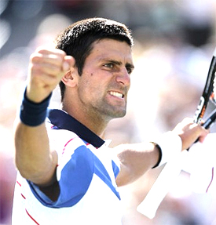

Previous: Forced Errors | 🏠 Strategy Home | Next: How Effective Is Playing the Net Really
How Djokovic Dominates Nadal
Comprehensive unified tennis knowledge base — Fundamentals, Stroke Analysis, Reference Library, and more
How Djokovic Dominates Nadal
Craig O'Shannessy

Novak Djokovic climbed to the top of the mountain.
In the past 10 years we have witnessed Roger Federer achieve the seemingly impossible, then watched Rafael Nadal rise to dominate Federer, and finally, Novak Djokovic emerge and put both of them in his back pocket. The success of one player has inspired the next to reach further greatness, and it is now Djokovic who stands at the top of the mountain.
Novak Djokovic's record-breaking 2011 wrote a new chapter in the evolution of the modern game, raising the bar to a ridiculously high level. In the process, he reversed Nadal's previous dominance of their rivalry, defeating him in Masters series events, in clay courts events in Madrid and Rome, and in Grand Slam finals at Wimbledon and the U.S. Open.
How did this happen? One answer lies in understanding the patterns of play between these two great champions.
Over the last few years, I have charted hundreds of professional matches, studying the nature of the exchanges between the world's best players. (Click Here.) This analysis provides us with a new perspective on the pro game and allows us to see how the changes Djokovic made were the key to his success, his Grand Slam championships and his number one ranking.
Djokovic's new strategies are some of the greatest counter moves in the history of our sport. And so far in 2011, Nadal has failed to come up any counter moves of his own to answer Djokovic's changes.
Novak's backhand and how he uses it: a key in reversing the Nadal rivalry.
In 2011 Djokovic changed the patterns in his matches with Nadal in two significant ways, first in how he used his backhand, and second, how he used his serve. Let's examine exactly how these changes reversed the rivalry.
Djokovic has won 10 titles (so far) and more than ten million dollars in prize money. It will go down as one of the best seasons of all time, and Djokovic has been widely recognized as the most dominant athlete in any sport this year.
His three Grand Slam titles in 2011 turned heads all around the world, but his domination over former world #1, Rafael Nadal, was simply jaw dropping, because, make no mistake about it, Nadal used to own Djokovic.
From 2006 to 2010 Nadal compiled a 16-7 record against Djokovic, beating him in the Slams, losing to him only in Masters Series events and in the 2009 London Tour Finals.
But in 2011, Djokovic turned it completely around, becoming more dominant in the rivalry that Nadal had ever been. He defeated Rafa an unprecedented six times in a row, including the Wimbledon and US Open finals.
Why? Djokovic is a vastly different player in 2011, and Nadal's 2010 tactics simply no longer apply. Nadal's problem is that his game simply has not continued to evolve to match or counter Djokovic.
Novak's backhand and how he uses it: a key in reversing the Nadal rivalry.
Djokovic's new game plan and court position resulted in two break-through clay court wins against Nadal in 2011 in Madrid and Rome – both in straight sets. The invincibility of Nadal on clay was over.
Djokovic's biggest win of the year was at Wimbledon, where he had his way with Nadal, winning the final 6-4, 6-1, 1-6, 6-3. Nadal commented in his post-match interview that his own game “does not bother” Djokovic. He also admitted that Djokovic is in his head, and that losing the four previous Masters Series matches affected him more than it should have.
The first key to Djokovic's new game plan in his court position, specifically standing closer to the baseline on the ad side of the court. The second is how he uses his backhand from this position.
Nadal has always relied on his heavy forehand to dominate the ad court side by using height, depth and spin to force his opponent into a neutral or defensive position. Nadal's 17-8 record against Roger Federer is almost wholly built around this tactic, making his ball jump up around his opponent's shoulders and out of the strike zone.
This tactic used to win against Djokovic, but not anymore.
Djokovic is now standing up in the court a lot closer to the baseline, nullifying Nadal's tactic that used to terrorize him. Djokovic simply refuses to let the ball get up on him - something Federer has not been able to consistently counter with his one-handed backhand.
Djokovic: standing in and refusing to let the ball get up.
Since Djokovic is taking the ball earlier, it has the effect of lowering the general height of the rally, making it harder for Nadal to continue to get the ball up. Because the arc of the exchanges is also flatter, Djokovic also has taken precious time away from Nadal to prepare for the next shot.
Robbing Nadal of time is key and has a two-fold effect. It rushes his preparation for the next shot. Even more importantly, it does not allow him the time to run around his backhand and turn it into a forehand.
Djokovic can now find Nadal's backhand at will. This is a huge difference. Making Nadal hit backhands instead of run-around forehands in takes away the engine that drives Nadal's game.
It seems surprising, but the statistics show that from the inside out run around position, Nadal's forehand produces many more winners and far less errors compared to balls hit from the traditional forehand side of the court.
These changes mean Djokovic no longer lives in fear of the Nadal run around forehand because he simply does not let him hit it nearly as much. Djokovic's backhand was always one of the best in the game, but now he is hitting it from the right part of the court to beat Nadal.
The statistics on Djokovic's backhand bear this out. Nadal has continued to use the exact same patterns against Djokovic, but Djokovic has reduced his backhand errors by two thirds. In the 2009 Monte Carlo final, when Nadal defeated Djokovic in 3 sets, he forced Novak into 31 backhand rally errors, an average of 10.3 per set.
Novak has reduced his backhand errors and forced Rafa into many more.
Fast forward to the 2011 Wimbledon final between the two players. In winning his first Wimbledon title, Djokovic only made 13 backhand rally errors in four sets, an average of 3.2 per set. As Djokovic's backhand errors have dried up, so have the victories for Nadal.
In New York in the U.S. Open final the statistical gap between number one and two widened even further. Djokovic made another huge statement, winning 6-2, 6-4, 6-7 (3), 6-1. Djokovic out-gunned Nadal with 55 winners to 32 and turned Nadal's venomous forehand into a non-factor.
In this match, Nadal looked clueless. He was forced to run side to side and defend as we have seen him do so many times before. But when he needed to come with his miraculous counterattacks, he had nothing to answer Djokovic's patterns, losing to him for the sixth straight time in 2011.
Novak: controlling the baseline with his backhand.
Djokovic's control of the baseline has added an advantage beyond neutralizing Nadal's forehand. It also put him in great position to force short balls and then attack. He had 47 approach points against Nadal and won 66 percent.
Against Nadal, his primary pattern was to approach to the backhand and then to make surprise approaches to the forehand once he had Rafa conditioned to that strategy. It works superbly.
By contrast, Nadal only ventured to the net 17 times in four sets. Nadal won 13 of those points, but to come forward so few times was a testament to Djokovic's superior court position and Nadal's broken strategy. The tour average is 8 approaches per set. Djokovic averaged almost 12, while Nadal averaged just over four approaches per set.
The real estate battle was clearly won by Djokovic as he prowled the baseline and hunted the short ball. Winning the match was an impossible task for Nadal when Djokovic owned both the back and the front of the court.
Djokovic also took control of Nadal's service games, breaking him 11 times with a massive 26 break point opportunities. Converting break point on Nadal's serve used to be the toughest point to win on tour (Soderling went 0/8 on break points against Nadal in the 2010 French Open final) but Djokovic now makes it look easy.
Again, it was Djokovic's improved backhand that wreaked havoc.
Nadal's favorite pattern in the ad court is to serve out wide to take advantage of his natural lefty slice. In the 2010 Wimbledon final versus Tomas Berdych, Nadal won 13/14 points on first serves out wide in the ad court and was perfect with 3/3 on second serves. He owned that position against Berdych, a major factor in saving all four break points he faced and therefore not being broken for the entire match.
Djokovic is able to neutralize Nadal's serve in the ad court.
The result against Djokovic was completely the opposite. Through the first three sets in New York, Nadal served wide in the ad court 19 times on first serves. He would normally expect to win 16 of those points. He only won eight.
Djokovic's improved backhand, and the improved court position he strikes it from, takes away Nadal's dominance in rallies, helps Djokovic get to the net a lot more, and takes points from Nadal's favorite serve patterns.
Tennis is a forehand dominated game, with around 75% of total groundstrokes winners coming from the forehand wing. Nadal's forehand is widely considered one of the best shots in the history of the game, and up until now, could slay all before it.
Does Novak have two swords?
Using the analogy of medieval war, the forehand is the sword and the backhand is the shield. The forehand is the weapon that you attack with. The backhand protects you when you are yourself attacked--and every now and then you can knock someone on the head with it.
But Djokovic has elevated his backhand in 2011 to such a high level that you could now make a good argument that he is playing with two swords.
There are a lot of great backhands on tour--Andy Murray, Mardy Fish, David Nalbandian--but none have developed it into the defensive and offensive weapon as Djokovic's.
Djokovic will finish No.1 in the world for the first time in his career at the end of 2011 and much of that can be attributed to his backhand, and the improved court position he hits it from.
Djokovic's six consecutive victories over Nadal--and four of the last five against Roger Federer--were unthinkable a year ago. The counter moves will surely come, but for the moment, Djokovic presents a puzzle no one has solved.

Craig O'Shannessy is widely recognized as the world leader in analyzing tennis statistics, tennis strategy, and applying his insights in coaching. His research has uncovered the real magic numbers in winning tennis across all levels of the game. He writes for the ATP Tour website and the New York Times among others elite publications.
He has coached on the tour for 20 years working with players including Kevin Anderson, Amer Delic, and Rajeev Ram. His website Brain Game Tennis offers detailed analysis and training programs based on his research that have helped thousands of players around the world.

Click Here to visit Craig's site and check out his amazing training products!
Source: tennisplayer.net archive — How Djokovic Dominates Nadal.docx (John Yandell teaching library, 2002-2022). Extracted and rendered as HTML for Tennis Future Lab.